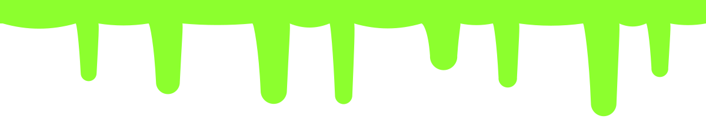
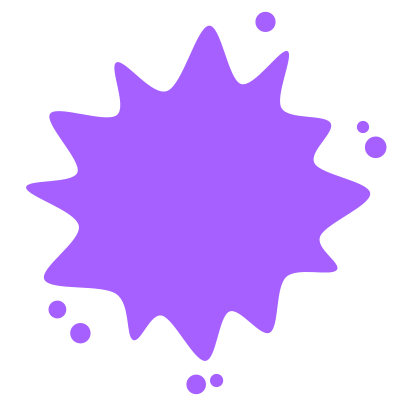
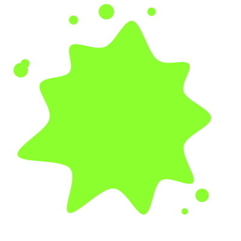

Local & sovereign AI
Monster
Scanner
A Qwen 2B vL model, ON AN iPhone
A working example of using local AI on an iPhone. Qwen3-VL-2B on an iPhone 14 Pro, with no network connectivity.
AI Engineering meetup · Bill Mcintyre · October 22 2026
Seven Questions
What we set out to explore
01
On-device LLM
Can a local OSS LLM reasonably run on an iPhone?
02
What it takes
Which runtime, models, hosts, and quantizations fit in memory?
03
Capabilities
Can it analyize photos and answer in strict, tool-ready JSON?
04
Performance
Fast enough for photo analysis in realtime, under 1 GB?
05
Deterministic
Can the model narrate within a testable code harness?
06
Guardrails
Can every AI response stay safe, reasonable and in-bounds?
07
Fallback
Can we maintain flow when/if the model fails?
02
Monster Scanner · Halloween edition
A Monster Scanner
Scan a friend. Find their inner monster.
Vampire · Alien · Kaiju · Werewolf · Zombie · Robot · Ghost · Certified Human
03
Monster Scanner · Halloween edition
AI (monster) Brain, Deterministic Wrapper
The model only narrates
Describes the photo and adds playful lines.
Measures, decides and checks every AI sentence.
04
Monster Scanner · Halloween edition
How It Works
Classic · always
Vision: face, tilt, eyes
Labels: hats, glasses
Pixels, clock, moon
AI observer
Qwen3-VL-2B, llama.cpp
Grammar-forced JSON
Strict kindness check
Verdict engine
Deterministic Swift
Seeded by the photo
47 clues: clothes, pose
Reveal
Code-written jokes
AI’s playful lines
Voice, sound, haptics
late or hot: skip
05
Monster Scanner · Halloween edition
1.55 GB
on disk
< 1 GB
peak memory
Meet Qwen3-VL-2B
| Part | Bits | Size |
|---|
| Language model | 4-bit | 1,107 MB |
| Vision projector | 8-bit | 445 MB |
Apache 2.0 open weights from the official Qwen org. Files: Qwen3VL-2B-Instruct-Q4_K_M and mmproj-Qwen3VL-2B-Instruct-Q8_0, both GGUF.
06
Monster Scanner · Halloween edition
Three Jobs
1
Observer
Reads the photo, returns JSON
2
Chaos Mode
Scores monsters; code clamps
3
AI Notes
Streams checked notes
07
Monster Scanner · Halloween edition
Why This Model
Official GGUFs from Qwen itself
llama.cpp runs its architecture
Fits beside the camera on 6 GB
Apache 2.0: free to ship
Tested in PocketPal first
Not (yet)
Qwen3.5-2B
No official GGUF yet
F16 projector
819 MB, kept in reserve
08
Monster Scanner · Halloween edition
llama.cpp on Metal
Official prebuilt xcframework · build b11799 · MIT · mtmd for images
No Simulator slice
Device builds only
A Swift actor
Main thread stays free
Lifecycle
Loads in 0.73 s
A Mac twin
126 tokens/s on a Mac
09
Monster Scanner · Halloween edition
JSON Every Time
| Setup (Mac, LlamaProbe) | Tokens/s | Output |
|---|
| No grammar | 130 | JSON in a code fence |
| Grammar, full ~152k vocabulary | 55 | Valid JSON |
| Grammar, whitespace squeezed | 55 | Invented “glasses, headphones” |
| Grammar after top-k 40 | 126 | Valid; crashes above temp 0 |
| Check-then-resample (shipped) | ~105 | Always valid |
5 of 5 valid on the phone
10
Monster Scanner · Halloween edition
Four More Lessons
Keep loops in C
Swift loop: −25% speed
Decode greedily
Same photo, same reading
Examples get copied
Show style, not samples
Only what you see
No more invented hats
On a props photo: “a top hat” · “two red balloons” · “like a happy, slightly sleepy explorer”
11
Monster Scanner · Halloween edition

0
unkind sentences kept, out of 187 in 50 field notes
Three Safety Layers
1 · Prompt rules
Clothes, props, pose, setting
2 · Grammar limits
Letters only, 100 chars max
3 · Kindness check in model
Safety reinforced in code
Word lists: unkind, age, looks, stereotypes
12
Monster Scanner · Halloween edition
9.1 s
worst reveal
budget: 12 s
Heat Is the Monster
“Serious” heat = half speed
Then the app skips the model
Soak: “fair” at 6, “serious” at 8
Scans 9–10 used Classic. No crash.
Load 0.73 s
~20 tokens/s
978 MB peak
14
Monster Scanner · Halloween edition
Works Offline
One download
HTTPS, pinned, Wi-Fi only
Pinned by hash
SHA-256 every launch
Checked first
GitHub, HF and CVE lists
One binary
llama.cpp + Qwen, that’s it
Nothing stored
Photos stay in memory
Approval gate
New stuff needs a human yes
15
Monster Scanner · Halloween edition
Apple Does the Rest
| Framework | Used for |
|---|
| Vision, Core Image | Face geometry, smiles, blinks, hats and setting |
| AVFoundation, Core Haptics | Camera, narration voice, synthesised sounds, haptics |
| SwiftUI | Every screen and the certificate image |
| PhotosUI | Photo import with no library permission |
| CryptoKit | SHA-256 checks and the per-photo seed |
| URLSession | The model download: the only network code |
16
Monster Scanner · Halloween edition
Nine Lessons
Model only sees
Code decides
Use a grammar
No broken JSON
Loops in C
Swift cost 25%
Design for heat
Plan a fallback
Describe style
Don’t show it
Build a Mac twin
1-second tests
AI is optional
Failures vanish
Pin and verify
Hash every file
Seed everything
Test the mix
18
Monster Scanner · Halloween edition
The Whole Stack
| Component | Version | Licence | Purpose |
|---|
| llama.cpp xcframework | b11799 | MIT | Inference on Metal + mtmd |
| Qwen3-VL-2B Q4_K_M | commit 52d6c8f | Apache 2.0 | Language model, 1,107 MB |
| Qwen3-VL-2B mmproj Q8_0 | commit 52d6c8f | Apache 2.0 | Vision projector, 445 MB |
| Apple frameworks | iOS 17+ SDK | Apple SDK | Camera, Vision, speech, UI |
| MonsterCore package | in the repo | Ours | Verdicts, prompts, jokes |
Target: iPhone 14 Pro (A16, 6 GB) · iOS 17+ · built on a MacBook Pro, M3 Max
19
Monster Scanner · Halloween edition
Scan me
Thank
You
The model narrates. The code decides.
Copyleft, GPL-3.0: use it, change it, share it, keep it open.
Bill Mcintyre · github.com/BillDX/monster-scanner